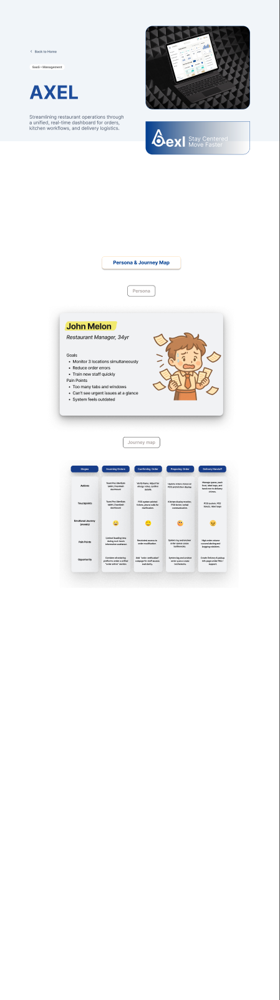
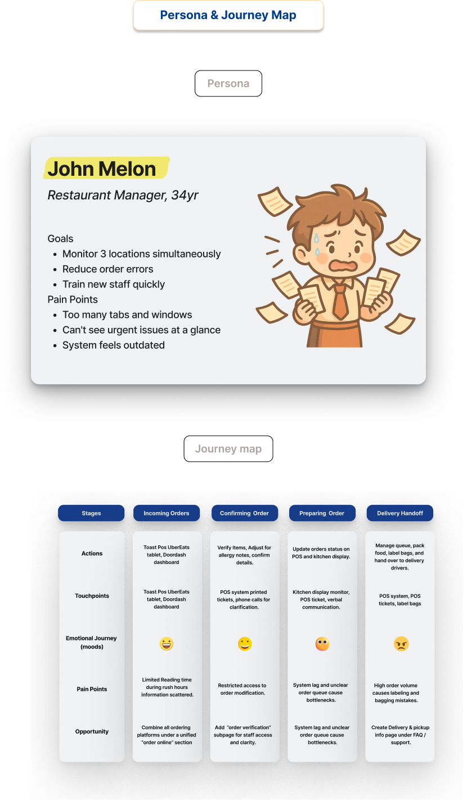

Restaurant operation SaaS case study
SaaS / Management / Restaurant operations
Axel Stay centered. Move faster.
Streamlining restaurant operations through a unified, real-time dashboard for orders, kitchen workflows, and delivery logistics.
UX Designer / Researcher, Business Strategist
10 weeks, Sep - Nov 2025
Today's Summary, Unified Order View, Define Actions
Project overview
From restaurant data to daily decisions.
Independent restaurant owners operate inside a dense mix of POS systems, delivery tablets, kitchen displays, phone orders, staff handoffs, and inventory pressures. Axel reframes that operational complexity into a daily action center that reduces cognitive load and restores control during high-pressure service windows.
I led Axel's end-to-end product vision, from uncovering operational pain points in independent restaurants to crafting an AI-driven system that turns complex data into clear daily actions. I conducted field research, mapped workflows, defined the core information architecture, and designed the full dashboard experience, including Today's Summary, Insights, and Define Actions.
Figma case board
The case narrative is built from the original design board.

Axel turns scattered restaurant operations into a single decision layer for managers who need urgency without noise.
The board connects persona, journey map, research findings, dashboard IA, and iteration requests into one public case story.
The strongest hiring signal is not the UI alone, but how research became a daily action center with business positioning.
Research and discovery
27 restaurants, one fragmented workflow.
Order management issues
Staff struggled to track manual orders, digital inputs, kitchen updates, and delivery handoffs in one mental model, which increased labeling and bagging mistakes.
Outdated POS systems
Many teams still relied on legacy hardware that did not connect cleanly with modern inventory tracking, reporting, and third-party delivery tools.
Fragmented workflows
UberEats, DoorDash, phone orders, walk-ins, POS tickets, and kitchen displays often lived in separate flows instead of one operational view.
Persona and journey
The manager needs urgency without noise.
Restaurant Manager, 34
- Monitor three locations simultaneously.
- Reduce order errors during peak hours.
- Train new staff quickly without adding more tabs.
- See urgent issues at a glance.
Turn scattered work into one decision layer
The journey exposed four high-friction moments: incoming orders, order confirmation, preparation, and delivery handoff. Each stage needed better visibility, clearer permissions, and faster issue resolution.
01
Incoming orders
POS, tablets, delivery apps, and phone calls arrive in separate channels.
02
Confirming order
Staff verify items, allergy notes, and order details under time pressure.
03
Preparing order
Kitchen display, POS tickets, queue status, and verbal updates compete for attention.
04
Delivery handoff
Packaging, labeling, pickup timing, and driver handoff create error risk.

How Might We
Reframing messy restaurant operations into design opportunities.
Unify scattered order channels without slowing staff down?
Phone orders, delivery apps, POS tickets, and kitchen display states needed one operational layer that stayed readable during rush hours.
Help managers notice urgent issues before service breaks?
The interface needed to separate true operational risk from background data, so managers could act without scanning every system.
Turn insight into follow-up action instead of passive analytics?
Axel became stronger when dashboard signals led to Define Actions, staff tasks, reminders, and issue recovery paths.
Ideation and architecture
Research became a platform hierarchy.
Translating the research into a coherent product required a multi-stage ideation process. I moved from sketches and workflow relationships into formal information architecture, defining how kitchen staff, front-of-house, managers, and delivery handoff moments should connect inside one system.
Merged feeds for POS, phone, walk-in, UberEats, DoorDash, and kitchen display states.
Manual inputs were treated as first-class operational data, not side notes.
Exception states became visible before they created delivery or service failures.
Manager and staff access patterns were separated to reduce accidental edits.
Operational insight could become follow-up work instead of staying as passive data.
Solution
Today's Summary becomes the action center.
Testing transformed a dashboard into a high-stakes Action Center.
The product direction moved away from passive analytics and toward urgent, manager-facing decisions for 27 independent restaurants.
Three core modules reduce cognitive load during service windows.
The final UI focuses on clarity and speed: high-contrast data, clear issue states, and action paths that help managers digest the day in seconds.
Today's Summary
Condenses performance, urgent alerts, operational status, and next actions into a daily dashboard.
Unified Order View
Merges manual, phone, walk-in, POS, UberEats, and DoorDash flows into one readable order layer.
Issue Resolution
Surfaces missing items, delayed orders, allergy notes, and restricted edits before they become service failures.
Staff Management
Supports roles, permissions, shift scheduling, task assignment, and manager-vs-staff access clarity.
Define Actions
Lets teams turn insights into their own operating rules, reminders, and follow-up actions.
AI decision support
Positions Axel as an AI-powered system that translates operational data into understandable daily actions.
Validation and iteration
Testing pushed the dashboard from analytics to action.
Requests from testing
- Define actions directly on each page.
- Send instant messages to customers when an issue appears.
- Understand customer habits and repeat order patterns.
- Trigger automatic supplier reminders when inventory is low.
From dashboard to operating system
The iteration moved Axel beyond passive reporting. The product became a high-stakes action center for restaurant managers who need fewer tabs, clearer priorities, and faster recovery from service issues.
Source board
Want to inspect the working board?
The public portfolio page now uses selected material from the original Axel Figma board, while the new case page keeps the story tighter for recruiters and product teams.
Open Figma board